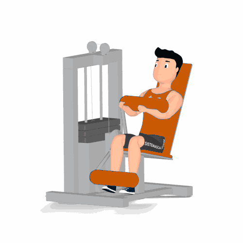

Abdominal Supra no Aparelho [2]

Exercício para fortalecimento e hipertrofia da região abdominal, reto abdominal, realizado em um aparelho. Indicado a praticante de musculação nível iniciante e intermediário. Fácil execução.
Ficha Técnica
Tipo: Musculação
Grupo Muscular: Abdome
Aparelho: Nenhum
Músculos: Nenhum
Como realizar
- Sente no aparelho, calce os pés no suporte;
- Estabilize a posição com o tronco apoiado ao encosto;
- Segure os pegadores com auxilio das mãos;
- Utilize a força dos músculos abdominais para flexionar o tronco em direção aos membros inferiores;
- Músculos contraídos por alguns segundos, retorne à posição inicial e repita os movimentos, conforme o número de repetições orientado pelo professor.
 RC STORE
RC STORE